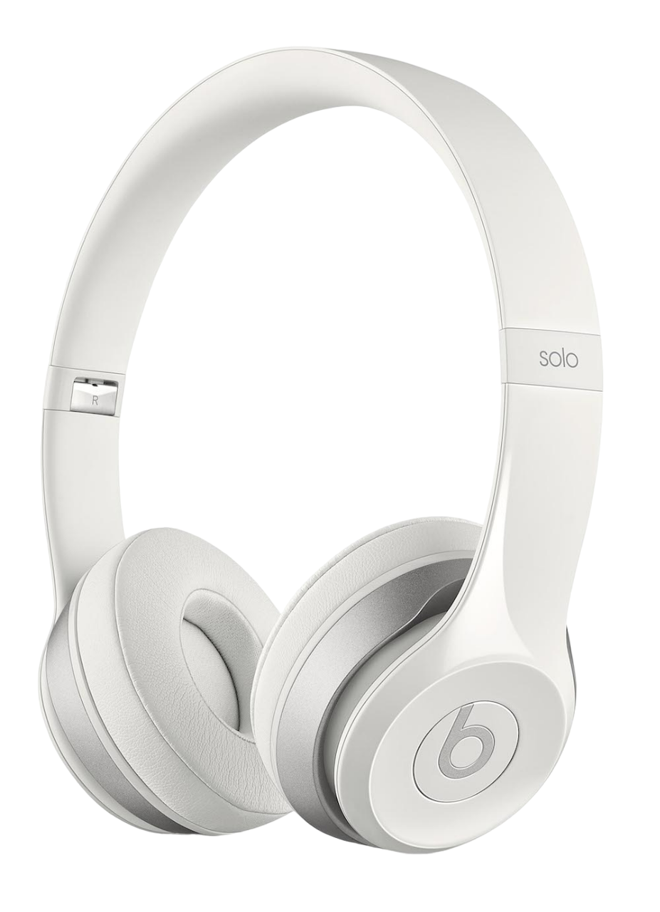
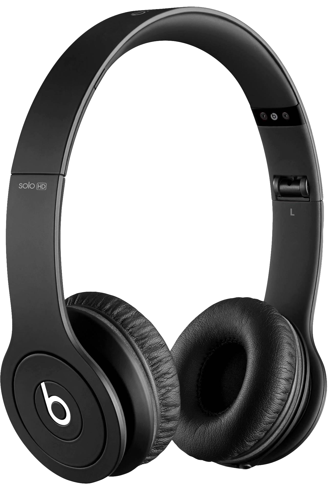

Bluetooth Headphones
The Beats Solo 4 On-Ear Wireless Headphones are designed to deliver a premium listening experience with high-resolution, lossless audio quality and seamless compatibility across devices. Thanks to their dual compatibility, you can enjoy one-touch pairing with both iOS and Android devices, making switching between platforms a breeze. Whether connected wirelessly or via USB-C or 3.5 mm audio cable, the Solo 4 offers versatility and excellent sound fidelity, making it ideal for any music lover.
1